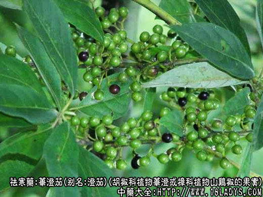
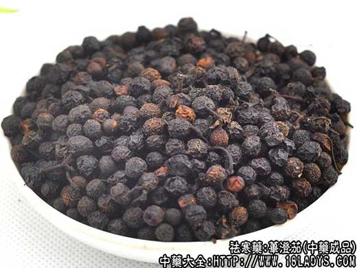
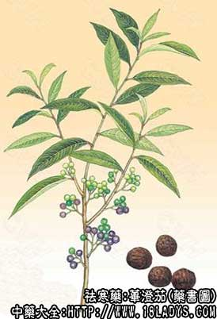

荜澄茄为少常用中药，始载于《开宝本草》。
别名：澄茄、毗陵茄子、山胡椒。
来源：为胡椒科植物荜澄或樟科植物山鸡椒的果实，其根为豆豉姜亦供药用，多为野生。
产地：主产于长江流域，如江苏、浙江、安徽、江西、湖北、云南、贵州等地。
性状鉴别：1、荜澄茄：未成熟的干燥核果，上部近圆球形，直径3～6毫米。表面暗棕色至棕黑色，有网状皱纹，顶端有突起柱头遗迹。基部果皮延长，形成细直的假果柄，长3～7毫米，直径约会1毫米，表面有纵皱纹。外果皮与中果皮稍柔软。内果皮薄而脆。内含未成熟的种子1粒，黄棕色，富油性，气强烈方向，味苦。
2、山鸡椒：成熟的果实，近圆球形，直径3～6毫米。外表棕黑色或黑褐色，有微细的网状皱纹。果基部有残留的小型宿萼，具6齿，下连细长的果柄。多已脱落。外果皮及中果皮柔软多油，内果皮薄而脆。内含种子1粒，子叶2片，黄棕色，富油质，胚根细小。气芳香如老姜，味稍辛辣而微苦。
以上两种，均以干身，个大，气味稍厚，有油质，无杂质者为佳。
主要成分：荜澄茄果实含挥发油10%～18%，荜澄茄素2.5%，树脂3%、色素7%、荜澄茄1.7%、脂肪油1.5%、淀粉1.8%。挥发油主要成分为A-香桧烯约33%。果实中尚含荜澄茄内脂。陈久品中并含荜澄茄脑。
山鸡椒果是含挥发油约5%、脂肪油40%。挥发油中主要成分为柠檬醛，甲基庚烯酮以及少量柠檬烯和芳香醇。脂肪油中含不皂化物1.3%，其中谷甾醇占3.5%。
山鸡椒叶含柠檬醛、挥发油、芳樟醇等；树皮含生物碱、柠檬醛，但不含香茅醛。
药理作用：荜澄茄果实对粘膜有局部刺激作用，并能吸收，对泌尿道及呼吸道粘膜也能发挥此种作用；口服其挥发油，对尿路有某些防腐作用。此种作用主要有荜澄酸引起。荜澄茄素无重要物理作用。
家兔口服山鸡椒流浸膏1g/kg，可使尿量及氯化物排泄量增加，而口服煎剂2g/kg则无作用。
山鸡椒水浸液，可杀灭淡色库蚊幼虫，其油剂或酊甘油剂搽于皮肤可避蚊虫。
其外，山鸡椒直接观察及培养，对日本吸血虫有抑制作用。
炮制：拣净杂质，生用。
性味：辛、温。
归经：入脾、肾经。
功能：温暖脾肾，健胃消食。
主治：食积气胀、脘腹冷痛、反胃呕吐、肠鸣泄泻、痰癖。
临床应用：荜澄茄暖脾肾，下冷气功专，对疗肾气及膀胱冷气之功，少类于花椒；治阴逆下气塞，少类于吴茱萸。本品以温为补，洵属外伤于寒及内虚为寒之对药。
治噎膈反胃，可与白豆蔻配伍；与高良姜配伍，可治寒呃；与薄荷叶、荆芥等配伍，可治鼻塞不通；与荜澄配伍，可治牙痛。
此外，临床常用荜澄茄粉末单服，对治疗阿米巴痢疾有效率90%以上。
使用注意：阴虚血分有热，发热咳嗽者忌用。
用量：1.5～9g；或入丸，散。外用：研末擦牙或放在鼻孔中。
处方举例：1、荜澄茄散（《扁鹊心书》）：治脾胃虚满，寒气上攻于心，心腹刺痛，两胁胀痛，头昏、四肢困倦，呕逆、发热、泄泻，饱闷；荜澄茄、高良姜、肉桂、丁香、制厚朴、桔梗、陈皮、醋三棱、甘草各45g、制香附90g。共为细末，每服12g，姜三片，水一盏，煎至七分，和渣服。
2、荜澄茄丸（《宣明论方》）：治中焦痞塞，气逆上攻，心腹痹痛；荜澄茄15g、高良姜60g、炒神曲、青皮、官桂（去皮）各30g、煨阿魏15g上为末。醋、面为丸梧子大。每服二十丸，生姜汤下，不计时候。
注：荜澄茄始载于宋（《开宝本草》），又名毗陵茄子，李时珍认为二者均是“番语”。陈藏器称“荜澄茄生佛誓国”。李珣称“胡椒生南海诸国，向阴者为澄茄，向阳者为胡。”按颐征广州志云，“澄茄生诸海国，乃嫩胡椒也。”李时珍称“南海诸番疆皆有之，蔓生，春开白花，夏结白实，与胡椒一类二种。”。又据《本草纲目》的附图，荜澄茄是南海所产胡椒种植物已无可疑。但现今中药所用荜澄茄均为樟科的山鸡椒，二者形状气味均颇为相似，故易相混而代用。又按（《唐本草》）载有湖南地方称山鸡椒代替进口的荜澄茄，亦属可能。
由上考证可以认为本草所载荜澄茄为胡椒科植物的果实，而如今所用中药荜澄茄为樟科植物山鸡椒的果实，即本草所载的“山胡椒”。二者功能主治既属相同、互相代用、亦属无妨。